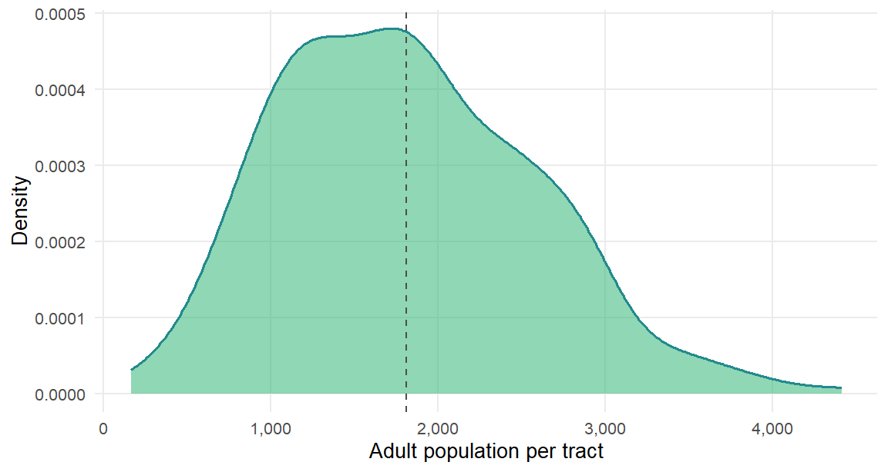
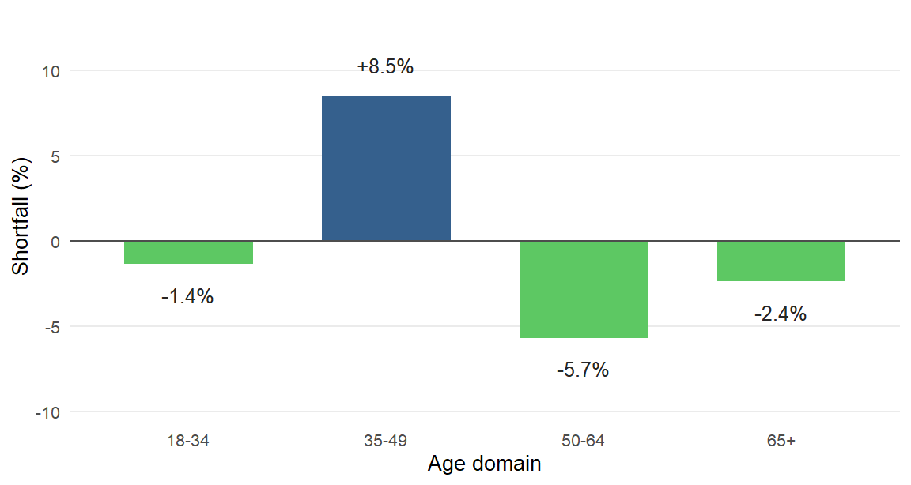
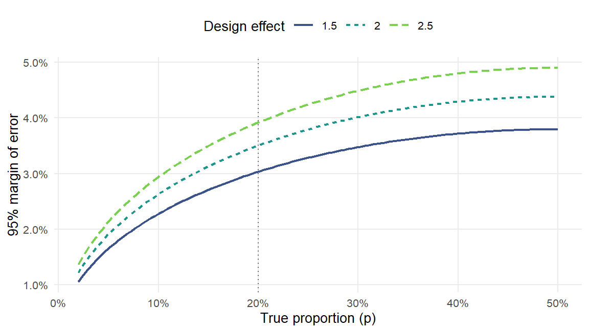
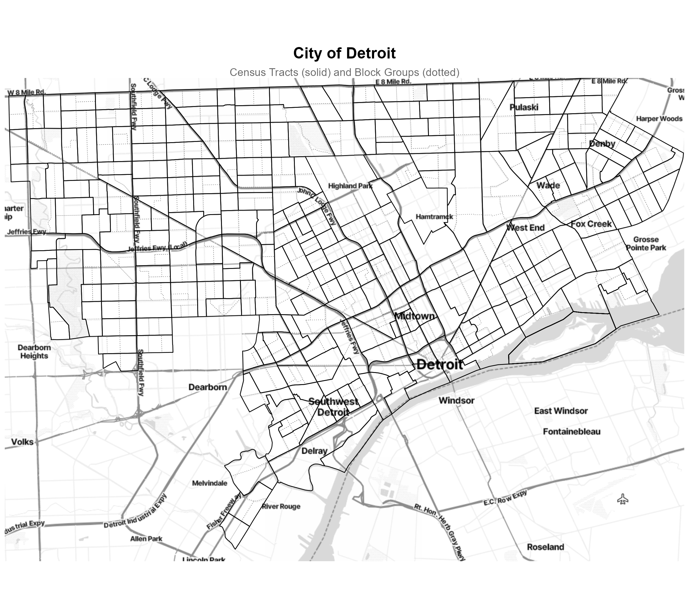
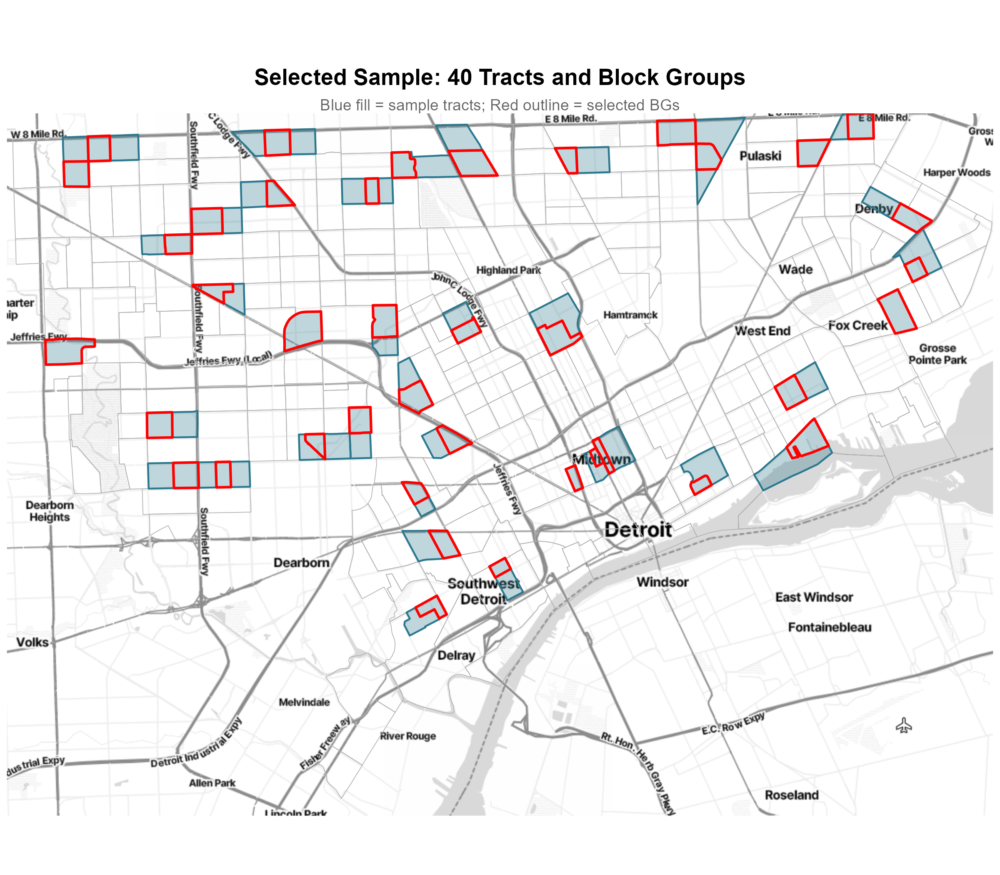

| Domain | n (respond) | Response Rate | N_d | n (select) | f_d |
|---|---|---|---|---|---|
| 18-34 | 250 | 0.35 | 161357 | 714.2857 | 0.004427 |
| 35-49 | 250 | 0.45 | 113272 | 555.5556 | 0.004905 |
| 50-64 | 250 | 0.50 | 117763 | 500.0000 | 0.004246 |
| 65+ | 250 | 0.65 | 87739 | 384.6154 | 0.004384 |
Detroit Transportation Multi-stage Survey Design
Technical Report
This report documents the design of a multi-stage area probability sample for a face-to-face survey of Detroit, Michigan residents on transportation security and use. The survey targets four outcomes: the proportion of residents living in a household without a vehicle, the proportion whose main means of transportation is public transit, the proportion who skipped a destination in the past month because of a transportation problem, and the proportion who asked for a ride from friends, family, or neighbors in the past month. Each outcome captures a different facet of transportation insecurity; together they give us enough precision for cit level policy estimates.
The sample uses a three-stage design in which census tracts serve as primary sampling units (PSUs), block groups as secondary sampling units (SSUs), and persons as elements. No address list or person roster exists in advance of fieldwork, so we do not execute person-level selection in this report. Instead, we describe the third stage as a field procedure: interviewers will list households in each selected block group, sample households, and choose one eligible adult per household. This is a commonly used approach in area probability sampling when no person-level frame is available.
The rest of the report covers the design goals and frame construction, the composite measure of size and selection probabilities at each stage, a discussion of why a single uniform rate cannot meet the study’s domain-level targets, anticipated precision of the key estimate, the weighting plan, guidance on variance estimation, and a map of the selected sample. The appendices hold a codebook for the exported data files, a reference to the separate sample listing deliverable, and a disclosure of AI assistance used in this project.
Designing the Sample
What the Design Needs to Do
The design needs to satisfy four requirements at once. First, it must yield 1,000 respondents split evenly across four age domains (250 each for 18–34, 35–49, 50–64, and 65+). Second, it must be self-weighting within each domain, so that every person in a given age domain has the same overall probability of being selected and no within-domain weighting correction is required.
The remaining two requirements concern field operations. Third, the design must produce an equal interviewer workload in each sample PSU, which keeps field costs predictable and simplifies management. Fourth, it must use systematic probability-proportional-to-size (PPS) selection at both the PSU and SSU stages with a single block group drawn per tract. The composite MOS method jointly satisfies all four requirements by building domain-specific sampling rates into the size measure used for selection.
Selecting one adult per household, rather than all eligible adults, is also a substantive choice. Vehicle ownership, transit use, and most of the other key outcomes are properties of the household, so responses from two adults in the same household would be highly correlated. Taking one adult per household avoids inflating the design effect that the within-household correlation would otherwise produce.
Who We Are Sampling
The target population consists of non-institutionalized adults aged 18 and older who reside in the City of Detroit, Michigan. Based on 2020 Decennial Census Demographic and Housing Characteristics (DHC) Summary File data, the cleaned and linked frame covers 480,131 adults across 265 eligible census tracts and 612 block groups. These counts reflect the state of the frame after we dropped zero-population areas and combined undersized tracts with neighboring units, as described in the next section.
Building the Frame
The sampling frame draws on 2020 DHC Summary File data retrieved through the U.S. Census Bureau API for Wayne County, Michigan, and restricted to the 280 census tracts that make up the City of Detroit. The data include housing-unit counts, total person counts, and person counts by sex and age (P12 table) at both the tract and block-group levels. We construct the frame at the block-group level first, collapsing the 49 sex-by-age columns into the four survey age domains using regex pattern matching, and then aggregate block-group totals to the tract level.
We deliberately derive tract counts from block-group aggregation rather than reading tract counts directly. The 2020 Census applies differential privacy noise independently at each geographic level, so tract-level totals do not exactly equal the sum of their constituent block-group totals in the source data. Deriving tract counts from block groups guarantees \(S_i = \sum_j S_{ij}\) at every downstream step, which is required for the conditional BG selection probabilities to sum correctly.
Cleaning and linking the frame
We apply three cleaning steps before sample selection. First, tract 26163985500 (tract 9855) appears as a duplicated, zero-population record in the tract data, and we drop it at ingestion. Second, we remove tracts and block groups with zero adult population; these are water, industrial, or institutional areas that contribute no eligible persons.
Third, we verify that every remaining block group supports the required workload through a feasibility check: the within-BG sampling rate must satisfy \(\pi_{k|ij}(d) \leq 1\) for every domain. Tracts in which all block groups fail this check are combined with their nearest geographic neighbor on the FIPS-sorted frame, following the linking procedure of Kish (1965). A small number of violating block groups remain inside otherwise large tracts, but their MOS values are so close to zero that the chance of any of them being drawn by PPS is negligible; we would apply Kish linking in the field if one were drawn. After these three steps, the frame contains 265 PSUs and 612 SSUs.
Sizing the Tracts and Block Groups
Before introducing the MOS formulas, we define the indices and symbols used throughout the rest of the report. The index \(i\) ranges over PSUs (census tracts) and \(j\) ranges over SSUs (block groups) within a PSU. The index \(d\) ranges over the four age domains and takes values \(1, 2, 3, 4\) corresponding to 18–34, 35–49, 50–64, and 65+, while the index \(k\) ranges over persons within a selected SSU.
The population counts are \(N_i(d)\), the population of domain \(d\) in PSU \(i\); \(Q_{ij}(d)\), the population of domain \(d\) in BG \(j\) of PSU \(i\); and \(N_d\), the total domain \(d\) population across the frame. The design constants are \(m = 40\), the number of sample PSUs; \(\bar{n} = 1\), the number of SSUs drawn per sample PSU; \(\bar{q}\), the expected number of persons to contact per sample BG; and \(r_d\), the expected response rate for domain \(d\). The quantity \(D = 4\) is the number of age domains.
The composite MOS method requires a domain sampling rate \(f_d = n_d / N_d\), where \(n_d\) is the desired domain sample size. The desired \(n_d\) admits two conventions. Under Approach A (selection-based), \(n_d = n_d^{\text{select}} = 250 / r_d\), the number of persons to contact in order to yield 250 respondents given the expected response rate. This convention folds the nonresponse inflation directly into the MOS.
Under Approach B (respondent-based), \(n_d = 250\), and the nonresponse inflation is applied at the person-selection stage in the field. We adopt Approach A because it keeps all selection probabilities self-contained at the design stage; field teams apply the specified rates with no additional inflation. Under Approach A, the workload per BG is \(\bar{q} = \sum_d n_d^{\text{select}} / (m \cdot \bar{n}) \approx\) 53.9 persons to contact. Table 1 shows the resulting design parameters for each domain.
The composite MOS assigns each tract a size that reflects its contribution across all four age domains rather than just its total adult count. Tracts with large populations in hard-to-reach domains receive a larger MOS because they carry more of the field work. This size-adjustment property is what allows the composite MOS to deliver self-weighting domain samples and equal PSU workload.
For PSU \(i\), the composite MOS is \[S_i = \sum_{d=1}^{D} f_d \cdot N_i(d),\] where \(f_d\) is the domain sampling rate and \(N_i(d)\) is the population of domain \(d\) in PSU \(i\). The total MOS across all PSUs equals the total target selection size: \(S = \sum_i S_i = \sum_d f_d N_d =\) 2154.46 \(\approx n^{\text{select}}\). PSU selection probabilities follow from \(\pi_i = m \cdot S_i / S\).
The three-stage extension adds analogous quantities at the block-group level. The BG-level composite MOS is \(S_{ij} = \sum_d f_d \cdot Q_{ij}(d)\), where \(Q_{ij}(d)\) is the population of domain \(d\) in BG \(j\) of PSU \(i\). The conditional BG selection probability is \(\pi_{j|i} = \bar{n} \cdot S_{ij} / S_i = S_{ij} / S_i\) since \(\bar{n} = 1\). The within-BG person rate for domain \(d\) is \(\pi_{k|ij}(d) = \bar{q} f_d / S_{ij}\).
Multiplying the three stage probabilities gives: \[\pi_i \cdot \pi_{j|i} \cdot \pi_{k|ij}(d) \;=\; \frac{m S_i}{S} \cdot \frac{\bar{n} S_{ij}}{S_i} \cdot \frac{\bar{q} f_d}{S_{ij}} \;=\; \frac{m \bar{n} \bar{q}}{S} f_d \;=\; f_d,\] and \(S = m \cdot \bar{n} \cdot \bar{q}\). Every person in domain \(d\) therefore has the same overall selection probability \(f_d\), regardless of which PSU or BG they live in. Equal workflow follows from the same construction, and the expected number of selections in any BG is \(\sum_d q^*_{ij}(d) = \bar{q}\), with \(q^*_{ij}(d) = \bar{q} f_d Q_{ij}(d) / S_{ij}\).
Verification
We verified four properties of the design at the PSU level. All within-PSU rates lie below 1, which confirms feasibility; the expected domain sample sizes match the composite-MOS formula; the expected workload equals 53.86 in every PSU; and \(\pi_i \cdot \pi_{k|i}(d) = f_d\) holds for every PSU and domain combination. All four checks pass, and the underlying arithmetic is reproducible from the code accompanying this report.
What the Frame Looks Like
Figure 1 shows the distribution of adult population across the 265 tracts in the cleaned frame, and Table 2 reports descriptive statistics for the frame variables that feed into MOS computation. The 265 tracts vary considerably in size, which motivates PPS selection: sampling with equal probability would oversample small tracts and undersample large ones. Domain populations across the frame are 161,357 adults 18–34, 113,272 adults 35–49, 117,763 adults 50–64, and 87,739 adults 65+.

| Variable | Mean | Min | Max | SD |
|---|---|---|---|---|
| TotHH | 1169.5 | 140 | 3906 | 468.5 |
| TotAdult | 1811.8 | 164 | 4417 | 760.8 |
| Age18to34 | 608.9 | 94 | 3241 | 331.8 |
| Age35to49 | 427.4 | 35 | 1084 | 189.7 |
| Age50to64 | 444.4 | 23 | 1168 | 182.9 |
| Age65plus | 331.1 | 7 | 1623 | 193.7 |
Could One Rate Work for Everyone?
An alternative to the composite MOS is to apply a single rate \(f = n^{\text{select}} / N_{\text{adult}}\) to everyone regardless of age. Under this uniform rate, every person in Detroit would have the same selection probability, and field implementation would be slightly simpler. However, because the four domains carry different expected response rates (0.35 for 18–34 compared with 0.65 for 65+), a uniform rate oversamples high-responding groups and undersamples the rest.
Figure 2 quantifies the resulting imbalance by plotting the percentage shortfall each domain would experience at the 250-respondent target. The 35–49 domain falls about 8.5% short, while the 65+ domain overshoots by roughly 20% more respondents than needed. Table 3 gives the expected respondent counts behind those percentages, and the composite MOS avoids this imbalance by built into domain-specific rates into the design from the start.

| Domain | N_d | Expected Respondents | Shortfall (%) |
|---|---|---|---|
| 18-34 | 161357 | 253.4 | -1.4 |
| 35-49 | 113272 | 228.7 | 8.5 |
| 50-64 | 117763 | 264.2 | -5.7 |
| 65+ | 87739 | 255.9 | -2.4 |
Drawing the Sample
How the Draw Works
We selected the sample in two stages using UPsystematic() from the sampling R package (Tillé and Matei, 2016), which implements Madow’s systematic PPS method. We sorted the PSU frame by FIPS code before selection, which provides implicit geographic stratification because adjacent tracts on the sorted list tend to be neighbors. Systematic PPS selection on a FIPS-sorted frame therefore spreads the sample across the city rather than concentrating it in any single area. We fixed the seed set.seed(-77) at the top of the selection code for reproducibility, as specified in the project assignment.
Systematic PPS has one implication for variance estimation. Exact joint selection probabilities \(\pi_{ii'}\) are not available for arbitrary pairs of PSUs, because some pairs have \(\pi_{ii'} = 0\), which rules out the Horvitz–Thompson variance estimator in its strict form. We therefore rely on the with-replacement approximation using paired analytic strata, as detailed in a later section.
Tract and Block Group Selection
We drew \(m = 40\) tracts with inclusion probabilities \(\pi_i = m \cdot S_i / S\). In the realized sample, the PSU selection probabilities range from 0.0377 to 0.3629, and none exceeds 1. The spread of \(\pi_i\) reflects the underlying heterogeneity in tract-level MOS values, which in turn tracks the domain-weighted population across tracts.
Within each selected tract we drew \(\bar{n} = 1\) block group with probability proportional to the BG-level composite MOS, \(\pi_{j|i} = S_{ij} / S_i\). For tracts that contain only one block group, the selection is deterministic and \(\pi_{j|i} = 1\). In total, we selected 40 block groups across the 40 sample tracts.
The joint BG probability is \(\pi_{ij} = \pi_i \cdot \pi_{j|i}\). Across the 40 sample block groups, \(\pi_{ij}\) ranges from 0.0368 to 0.1652, all below 1. Within-BG person rates \(\pi_{k|ij}(d) = \bar{q}f_d/S_{ij}\) vary across block groups: 0.027 to 0.120 for 18–34, 0.030 to 0.133 for 35–49, 0.026 to 0.115 for 50–64, and 0.027 to 0.119 for 65+, all below 1, which confirms feasibility. The expected workload per BG equals 53.86 in every sample block group, which confirms the equal-workload property.
Person Selection in the Field
In area probability sampling, interviewers reach persons through households. We do not execute this stage in the report because no address list yet exists, but the procedure for field teams is as follows. Interviewers first compile a complete listing of all occupied housing units in the selected block group using Census address data and on-the-ground observation. They then sample households systematically at a rate that, combined with \(\pi_{ij}\), yields the desired person-level rates; with about 1.55 eligible adults per household in Detroit, the household rate is adjusted accordingly.
At each sampled household, the interviewer administers a brief screener to enumerate all persons aged 18+ and classify them into the four age domains. One eligible adult is then selected at random using a Kish grid or the next-birthday method, with the selection probability calibrated so that \(\pi_{k|ij}(d) = \bar{q} f_d / S_{ij}\) for each domain \(d\). The overall probability for a person in domain \(d\) is \(\pi_i \cdot \pi_{j|i} \cdot \pi_{k|ij}(d) = f_d\), which confirms the self-weighting property in the field.
Field teams should apply the specified rates directly rather than round to fixed integer counts. The expected sample sizes at the BG level are generally not integers, and rounding breaks the self-weighting property. The simplest implementation is to translate the rate into a “take every \(1/\pi_{k|ij}(d)\)th eligible person in domain \(d\)” rule and let the random start carry the probability.
Expected Precision of the Key Estimate
The key outcome for precision calculations is the proportion of Detroit residents whose main means of transportation is public transit. Precision in a clustered design depends on the design effect, which captures the variance inflation caused by within-cluster correlation. For a two-stage cluster sample, the approximate design effect is \[\text{deff} \approx 1 + (\bar{b} - 1)\delta,\] where \(\bar{b}\) is the average number of respondents per PSU (about 25 in this design given \(n = 1{,}000\) and \(m = 40\)) and \(\delta\) is the intraclass correlation coefficient within tracts.
For demographic and behavioral variables in U.S. urban populations, \(\delta\) typically falls between 0.01 and 0.05, which yields design effects in the range of 1.2 to 2.2. The variance of an estimated proportion under the cluster design is approximately \(\text{Var}(\hat{p}) \approx \text{deff} \cdot p(1-p)/n\), where \(\hat{p}\) is the sample proportion, \(p\) is the true population proportion, and \(n\) is the total number of respondents. Figure 3 traces the 95% margin of error as a continuous function of \(p\) for three plausible design effects at \(n = 1{,}000\).

For a transit use proportion near \(p = 0.20\) with \(\text{deff} = 2.0\), the 95% margin of error is about \(\pm\) 0.035, which is adequate for the policy questions this survey is designed to address. Domain-level estimates, which use roughly 250 respondents each, have about double that margin of error, or approximately \(\pm\) 0.07. Analysts should keep this scaling in mind when interpreting subgroup differences from the final data set.
Weights
Survey weights are values attached to each respondent that let estimates from the sample represent the full Detroit adult population. The weighting plan proceeds in three steps: we compute a base weight from the selection probability, adjust for cases with unknown eligibility, and apply a nonresponse adjustment. After these three adjustments, the weighted sample supports population-level estimates for Detroit adults and for each of the four age domains.
Base Weights
The base weight is the inverse of the overall selection probability. At the BG level, the joint probability is \(\pi_{ij} = \pi_i \cdot \pi_{j|i}\), so the BG-level base weight is \[d_{0,ij} = \frac{1}{\pi_i \cdot \pi_{j|i}}.\] Under the three-stage self-weighting design, the person-level probability in domain \(d\) is \(\pi_k(d) = f_d\), which gives a person-level base weight of \(d_0(d) = 1/f_d = N_d / n_d^{\text{select}}\) that is constant within each domain. As a quality check, the sum of base weights across the expected sample in each domain should reproduce the domain population total \(N_d\).
Unknown Eligibility Adjustment
During field listing, interviewers will encounter housing units whose eligibility cannot be determined. Examples include units that look occupied but where no contact is ever made, and addresses that turn out to be vacant or demolished. We code these cases as unknown eligibility (\(s_{UNK}\)) rather than forcing a resolution that the data do not support.
The standard approach redistributes the weight of unknowns to cases with known eligibility within adjustment classes. The adjustment is \[a_{1b} = \frac{\sum_{i \in s_b} d_{0i}}{\sum_{i \in s_{b,KN}} d_{0i}},\] where \(s_b\) is the set of sample cases in class \(b\) and \(s_{b,KN}\) is the subset whose eligibility is known. The adjusted weight becomes \(d_{1i} = a_{1b} \cdot d_{0i}\) for cases with known eligibility and zero for the unknowns. Alternative candidates for adjustment classes include tract-level Census variables such as vacancy rates and housing type.
Nonresponse Adjustment
Among cases known to be eligible, some will decline to take the survey. We apply a weighting-class nonresponse adjustment within class \(c\), \[a_{2c} = \frac{\sum_{i \in s_{c,E}} d_{1i}}{\sum_{i \in s_{c,ER}} d_{1i}},\] where \(s_{c,E}\) is the set of eligible cases in class \(c\) and \(s_{c,ER}\) is the subset of eligible respondents.
The four age domains are a natural choice for adjustment classes because the expected response rates already differ by domain, from 0.35 for 18–34 up to 0.65 for 65+. If response propensity is roughly constant within a domain, the adjustment simplifies to \(a_{2c} \approx 1/r_d\), where \(r_d\) is the domain-level response rate. The final weight attached to each respondent is \(d_{2i} = a_{2c} \cdot d_{1i}\), and analysts should use this weight in all design-based estimation.
Estimating Standard Errors
Given thtat we select the sample in stages, formulas that assume simple random sampling understate the standard errors. Analysts should treat persons within the same tract as clustered and account for that clustering through either Taylor series linearization or replication methods. Both approaches depend on correctly identifying PSUs and analytic strata; the stratum and PSU identifiers attached to the final sample drive the variance calculation in survey and similar packages.
Taylor series linearization
Since systematic PPS does not deliver exact joint selection probabilities, we form paired analytic strata by grouping adjacent sample PSUs in the FIPS-sorted selection order. With \(m = 40\) sample PSUs, this yields 20 strata of 2 PSUs each. The pairing preserves the implicit geographic stratification introduced by the FIPS sort.
Within this setup, survey::svydesign() applies the ultimate cluster variance estimator and computes standard errors via Taylor series linearization. The function treats each sample PSU as a cluster and captures all within-PSU variability from the SSU and person stages through the between-PSU variation. An analyst would construct the design object as follows after data collection:
detroit_design <- svydesign(
id = ~ psu_id,
strata = ~ analytic_stratum,
weights = ~ final_weight,
data = survey_data,
nest= TRUE)
svymean(~ I(transit == "public"), design = detroit_design)
svyby(~ I(transit == "public"), ~ age_domain,
design = detroit_design, FUN = svymean)The id argument identifies PSUs (tracts), strata identifies the paired analytic strata, and weights holds the final nonresponse-adjusted weight. Setting nest = TRUE tells svydesign() that PSU identifiers restart within each stratum, which is the case in this design. Analysts should confirm that the stratum and PSU identifiers are formatted consistently before any variance calculation.
Jackknife replication
As an alternative to linearization, analysts can use delete-one-PSU jackknife (JKn). JKn drops one PSU at a time, re-estimates the statistic from each of the \(m = 40\) reduced samples, and computes the variance from the spread of the replicate estimates. It is especially useful for nonlinear estimators such as ratios and quantiles, where the Taylor series approximation can be less accurate than the replicate-based variance.
detroit_jk <- as.svrepdesign(design = detroit_design, type = "JKn")
svymean(~ I(transit == "public"), design = detroit_jk)Where the Sample Lands
Figures 4 and 5 show the City of Detroit frame and the selected sample. Figure 4 shows all 265 tracts and 612 block groups on the cleaned frame, with tract boundaries in solid lines and block-group boundaries dotted. Figure 5 overlays the selected sample on the same basemap: the 40 sample tracts appear in blue fill, and the 40 selected block groups are outlined in red. The spread of selected tracts across the city reflects the implicit geographic stratification produced by systematic PPS selection on the FIPS-sorted frame.


Kish, L. (1965). Survey Sampling. New York: John Wiley & Sons.
Tillé, Y., & Matei, A. (2016). sampling: Survey Sampling. R package.
Codebook for Exported Data Files
Three data files accompany this report. The two frame files describe every unit on the sampling frame at the time of selection and include the composite measure of size used to draw the sample. The sample file contains only the 40 selected block groups, along with their selection probabilities, per-domain sampling rates, and base weights. The codebooks below describe every variable on each of these files.
| Variable | File | Type | Description |
|---|---|---|---|
| Tract | PSU, BG | character | 11-digit census tract FIPS code. |
| BlockGroup | BG | character | 12-digit block group FIPS code. |
| TotHH | PSU, BG | numeric | Occupied housing units (DHC H1). |
| TotAdult | PSU, BG | numeric | Persons aged 18+. |
| Age18to34 | PSU, BG | numeric | Persons aged 18 to 34. |
| Age35to49 | PSU, BG | numeric | Persons aged 35 to 49. |
| Age50to64 | PSU, BG | numeric | Persons aged 50 to 64. |
| Age65plus | PSU, BG | numeric | Persons aged 65 and older. |
| MOS | PSU | numeric | Composite MOS for the tract. |
| MOS_bg | BG | numeric | Composite MOS for the block group. |
| pi_i | PSU | numeric | PSU selection probability. |
| Variable | Type | Description |
|---|---|---|
| Tract | character | Tract FIPS code of the selected PSU. |
| BlockGroup | character | Block group FIPS code of the selected SSU. |
| TotHH | numeric | Occupied housing units in the selected BG. |
| TotAdult | numeric | Adults 18+ in the selected BG. |
| Age18to34 | numeric | Adults 18 to 34 in the selected BG. |
| Age35to49 | numeric | Adults 35 to 49 in the selected BG. |
| Age50to64 | numeric | Adults 50 to 64 in the selected BG. |
| Age65plus | numeric | Adults 65+ in the selected BG. |
| MOS_bg | numeric | Block-group-level composite MOS. |
| pi_i | numeric | PSU selection probability. |
| pij_given_i | numeric | Conditional BG probability given the PSU. |
| pi_ij | numeric | Joint BG selection probability. |
| rate_Age18to34 | numeric | Within-BG sampling rate, domain 18-34. |
| rate_Age35to49 | numeric | Within-BG sampling rate, domain 35-49. |
| rate_Age50to64 | numeric | Within-BG sampling rate, domain 50-64. |
| rate_Age65plus | numeric | Within-BG sampling rate, domain 65+. |
| d0_bg | numeric | BG-level base weight (inverse of pi_ij). |
| d0_18to34 | numeric | Person-level base weight, domain 18-34. |
| d0_35to49 | numeric | Person-level base weight, domain 35-49. |
| d0_50to64 | numeric | Person-level base weight, domain 50-64. |
| d0_65plus | numeric | Person-level base weight, domain 65+. |
| exp_workload | numeric | Expected persons to contact in the BG. |
Detailed Sample Listing
The full listing of the 40 selected block groups, along with all census counts, selection probabilities, per-domain sampling rates, and base weights, is provided as a separate deliverable in SAMPLE_EffectSize.pdf. Readers should consult that file for the row-level detail; the variables it contains are described in the sample-file codebook above. We kept the detailed listing in a standalone file rather than inside this report to keep the main document compact and to match the project’s deliverables structure.
Disclosure of AI Assistance
We used Claude (Anthropic, Opus 4.7) as a coding assistant to troubleshoot three specific technical issues in the R code and Quarto rendering pipeline. AI was not used to draft prose, generate analytic decisions, or produce any of the interpretive content in this report. All text, design choices, and conclusions are the work of the team.
Where AI was used:
- Debugging
dplyr::across()behavior. The original code applied thef_ddomain sampling-rate vector to four domain-population columns usingacross(), and the result exhibited unexpected vector-recycling behavior that produced incorrect measures of size. AI assistance helped diagnose the cause and rewrite the mutation so that each domain column multiplies its matchingf_delement. - LaTeX and
kable()formatting. The appendix codebook tables initially overflowed the page margins, and subsequent attempts to fix the overflow produced asetstretchcompilation error and an invalidalignargument tokable(). AI assistance helped identify the correct combination ofkable()arguments andkableExtra::column_spec()calls to control column widths without breaking compilation. - Map rendering with
ggmapandgeom_sf. The Detroit sample map required a Stadia Maps basemap underneathgeom_sfpolygon overlays. AI assistance helped configure theinherit.aes = FALSEargument on eachgeom_sflayer and suppress verbosetigrisdownload output during rendering.
Verbatim prompts used:
- “why does
across()recycle my f_d vector in a weird way?” - “how should I format a wide kable table for PDF output?”
- “what’s the right way to overlay
geom_sfon aggmapbasemap?”
We reviewed, tested, and edited all AI output before incorporating it into the code base. No AI-generated text appears verbatim in this report.